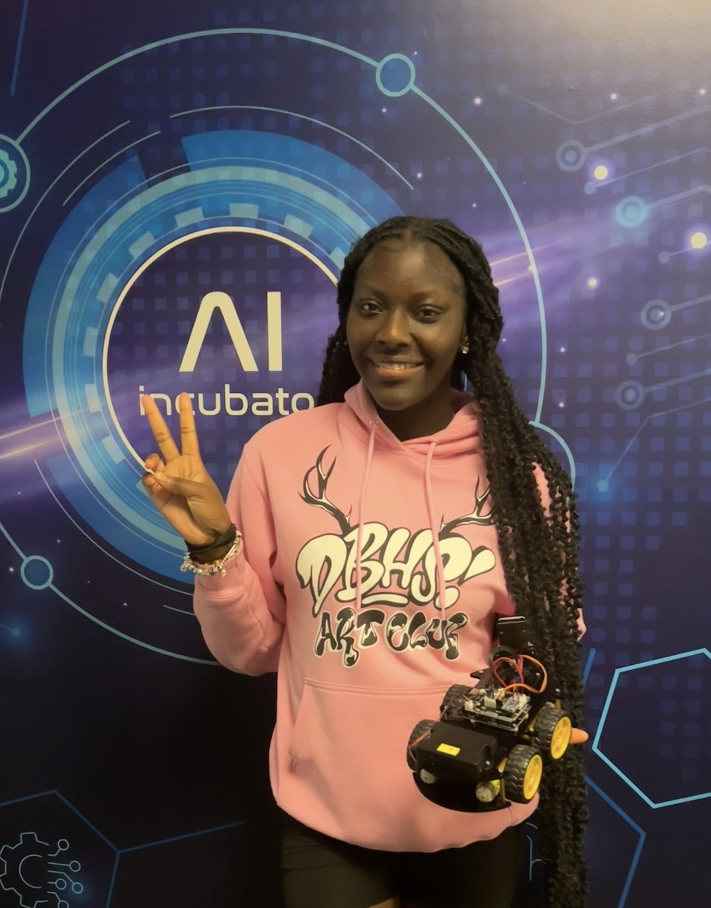

About Me
I am an 11th grader at Deerfield Beach High. I am in the BC Trio Upward Bound Program. Im Born and Half raised in Jamaica. I enjoy skating and playing basketball my favorite colors are black and purple.
Trio 24 Summer Classes
- American Sign Language
- SAT Reading & Math
- Financial Literacy
- Robotics & Coding
Projects
ASL Project
Here Is My Video For ASL
Coding Pictures
Here Are My Pictures From Coding
My Trio 24 Experience
My Trio 2024 was probably one of the best summers i have had in a while and i got to experience many new things. I met some AMAZING new AC'S and built better bonds with old ones. My favorite class was with Ms.Prince aka ROBOTICS!!!! Skating was my FAVORITE cultural experience because i love to skate but also i enjoyed Water Rapids since we were able to play and have fun with following TRIO members. If i was to rate this summer out of ten it would be an 1000/10. I Love MY TRIO Family!